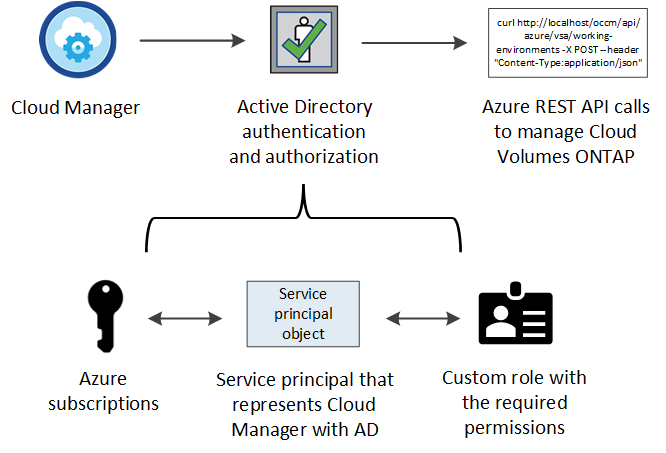
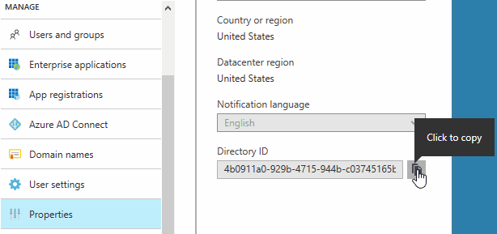

发行说明
发行说明
将云提供商帐户添加到 Cloud Manager
 建议更改
建议更改
如果要在不同云帐户中部署 Cloud Volumes ONTAP ，则需要为这些帐户提供所需的权限，然后将详细信息添加到 Cloud Manager 。
从 Cloud Central 部署 Cloud Manager 时， Cloud Manager 会自动添加 "云提供商帐户" 适用于部署 Cloud Manager 的帐户。如果您在现有系统上手动安装 Cloud Manager 软件，则不会添加初始云提供商帐户。
设置 AWS 帐户并将其添加到 Cloud Manager
如果要在不同的 AWS 帐户中部署 Cloud Volumes ONTAP ，则需要为这些帐户提供所需的权限，然后将详细信息添加到 Cloud Manager 。如何提供权限取决于您是要为 Cloud Manager 提供 AWS 密钥还是要为受信任帐户中某个角色提供 ARN 。
提供 AWS 密钥时授予权限
如果要为 IAM 用户提供 Cloud Manager 的 AWS 密钥，则需要向该用户授予所需的权限。Cloud Manager IAM 策略定义了允许云管理器使用的 AWS 操作和资源。
-
从下载 Cloud Manager IAM 策略 "Cloud Manager 策略页面"。
-
从 IAM 控制台，通过从 Cloud Manager IAM 策略复制和粘贴文本来创建您自己的策略。
-
将策略附加到 IAM 角色或 IAM 用户。
现在，此帐户具有所需权限。 现在，您可以将其添加到 Cloud Manager 中。
在其他帐户中使用 IAM 角色来授予权限
您可以使用 IAM 角色在部署 Cloud Manager 实例的源 AWS 帐户与其他 AWS 帐户之间建立信任关系。然后，您可以为 Cloud Manager 提供可信帐户中 IAM 角色的 ARN 。
-
转到要部署 Cloud Volumes ONTAP 的目标帐户，然后选择 * 其他 AWS 帐户 * 来创建 IAM 角色。
请务必执行以下操作：
-
输入 Cloud Manager 实例所在帐户的 ID 。
-
附加 Cloud Manager IAM 策略，该策略可从获得 "Cloud Manager 策略页面"。

-
-
转到 Cloud Manager 实例所在的源帐户，然后选择附加到该实例的 IAM 角色。
-
单击 * 信任关系 > 编辑信任关系 * 。
-
添加 "STS ： AssumeRole" 操作以及您在目标帐户中创建的角色的 ARN 。
-
示例 *
-
{ "Version": "2012-10-17", "Statement": { "Effect": "Allow", "Action": "sts:AssumeRole", "Resource": "arn:aws:iam::ACCOUNT-B-ID:role/ACCOUNT-B-ROLENAME" } } -
现在，此帐户具有所需权限。 现在，您可以将其添加到 Cloud Manager 中。
将 AWS 帐户添加到 Cloud Manager
在为 AWS 帐户提供所需权限后，您可以将此帐户添加到 Cloud Manager 中。这样，您就可以在该帐户中启动 Cloud Volumes ONTAP 系统。
-
在 Cloud Manager 控制台右上角，单击任务下拉列表，然后选择 * 帐户设置 * 。
-
单击 * 添加新帐户 * 并选择 * AWS * 。
-
选择是要提供 AWS 密钥还是要提供可信 IAM 角色的 ARN 。
-
确认已满足策略要求，然后单击 * 创建帐户 * 。
现在，在创建新的工作环境时，您可以从 " 详细信息和凭据 " 页面切换到其他帐户：

设置 Azure 帐户并将其添加到 Cloud Manager
如果要在不同的 Azure 帐户中部署 Cloud Volumes ONTAP ，则需要为这些帐户提供所需的权限，然后将有关这些帐户的详细信息添加到 Cloud Manager 。
使用服务主体授予 Azure 权限
Cloud Manager 需要权限才能在 Azure 中执行操作。您可以通过在 Azure Active Directory 中创建和设置服务主体以及获取 Cloud Manager 所需的 Azure 凭据来为 Azure 帐户授予所需权限。
下图描述了 Cloud Manager 如何获得在 Azure 中执行操作的权限。与一个或多个 Azure 订阅绑定的服务主体对象表示 Azure Active Directory 中的 Cloud Manager 并分配给允许所需权限的自定义角色。


|
以下步骤使用新的 Azure 门户。如果遇到任何问题、您应使用 Azure Classic Portal 。 |
使用所需的云管理器权限创建自定义角色
要为 Cloud Manager 提供在 Azure 中启动和管理 Cloud Volumes ONTAP 所需的权限、需要一个自定义角色。
-
通过将 Azure 订阅 ID 添加到可分配范围来修改 JSON 文件。
您应该为每个 Azure 订阅添加 ID 、用户将从中创建 Cloud Volumes ONTAP 系统。
-
示例 *
"AssignableScopes": [ "/subscriptions/d333af45-0d07-4154-943d-c25fbzzzzzzz", "/subscriptions/54b91999-b3e6-4599-908e-416e0zzzzzzz", "/subscriptions/398e471c-3b42-4ae7-9b59-ce5bbzzzzzzz" -
-
使用 JSON 文件在 Azure 中创建自定义角色。
以下示例说明了如何使用 Azure CLI 2.0 创建自定义角色：
-
AZ 角色定义 create -role-definition C ： \Policy_for_cloud Manager_Azure_3.6.1.json*
-
现在，您应该拥有一个名为 OnCommand Cloud Manager Operator 的自定义角色。
创建 Active Directory 服务主体
必须创建 Active Directory 服务主体、以便 Cloud Manager 可以使用 Azure Active Directory 进行身份验证。
您必须在 Azure 中具有相应的权限才能创建 Active Directory 应用程序并将应用程序分配给角色。有关详细信息，请参见 "Microsoft Azure 文档：使用门户创建可访问资源的 Active Directory 应用程序和服务主体"。
-
从 Azure 门户中，打开 * Azure Active Directory* 服务。

-
在菜单中，单击 * 应用程序注册（旧版） * 。
-
创建服务主体：
-
单击 * 新建应用程序注册 * 。
-
输入应用程序的名称，并保持选中 * 万维网应用程序 /APi* ，然后输入任何 URL ，例如 http://url
-
单击 * 创建 * 。
-
-
修改应用程序以添加所需权限：
-
选择已创建的应用程序。
-
在设置下，单击 * 所需权限 * ，然后单击 * 添加 * 。

-
单击 * 选择一个 APi* ，选择 * Windows Azure 服务管理 APi* ，然后单击 * 选择 * 。

-
单击 * 以组织用户身份访问 Azure 服务管理 * ，单击 * 选择 * ，然后单击 * 完成 * 。
-
-
为服务主体创建密钥：
-
在设置下，单击 * 密钥 * 。
-
输入问题描述并选择持续时间，然后单击 * 保存 * 。
-
复制密钥值。
在向 Cloud Manager 添加云提供商帐户时，您需要输入关键值。
-
单击 * 属性 * ，然后复制服务主体的应用程序 ID 。
与关键值类似，在向 Cloud Manager 添加云提供商帐户时，您需要在 Cloud Manager 中输入应用程序 ID 。

-
-
获取组织的 Active Directory 租户 ID ：
-
在 Active Directory 菜单中，单击 * 属性 * 。
-
复制目录 ID 。

与应用程序 ID 和应用程序密钥一样，在向 Cloud Manager 添加云提供商帐户时，您必须输入 Active Directory 租户 ID 。
-
现在应该有 Active Directory 服务主体、并且应该已复制应用程序 ID 、应用程序密钥和 Active Directory 租户 ID 。添加云提供商帐户时，您需要在 Cloud Manager 中输入此信息。
将 Cloud Manager 操作员角色分配给服务主体
您必须将服务主体绑定到一个或多个 Azure 订阅并将云管理器操作员角色分配给它，以便 Cloud Manager 在 Azure 中具有权限。
如果要从多个 Azure 订阅部署 Cloud Volumes ONTAP ，则必须将服务主体绑定到每个订阅。使用 Cloud Manager ，您可以选择部署 Cloud Volumes ONTAP 时要使用的订阅。
-
从 Azure 门户中，选择左窗格中的 * 订阅 * 。
-
选择订阅。
-
单击 * 访问控制（ IAM ） * ，然后单击 * 添加 * 。
-
选择 * OnCommand 云管理器操作员 * 角色。
-
搜索应用程序的名称（滚动无法在列表中找到该名称）。
-
选择应用程序，单击 * 选择 * ，然后单击 * 确定 * 。
Cloud Manager 的服务主管现在具有所需的 Azure 权限。
将 Azure 帐户添加到 Cloud Manager
在为 Azure 帐户提供所需权限后，您可以将此帐户添加到 Cloud Manager 中。这样，您就可以在该帐户中启动 Cloud Volumes ONTAP 系统。
-
在 Cloud Manager 控制台右上角，单击任务下拉列表，然后选择 * 帐户设置 * 。
-
单击 * 添加新帐户 * 并选择 * Microsoft Azure* 。
-
输入有关授予所需权限的 Azure Active Directory 服务主体的信息：
-
确认已满足策略要求，然后单击 * 创建帐户 * 。
现在，在创建新的工作环境时，您可以从 " 详细信息和凭据 " 页面切换到其他帐户：

将其他 Azure 订阅与受管身份关联
通过 Cloud Manager ，您可以选择要在其中部署 Cloud Volumes ONTAP 的 Azure 帐户和订阅。除非关联，否则您无法为托管身份配置文件选择其他 Azure 订阅 "托管身份" 这些订阅。
初始身份为托管身份 "云提供商帐户" 从 NetApp Cloud Central 部署 Cloud Manager 时。部署云管理器后、 Cloud Central 创建了 OnCommand Cloud Manager 操作员角色并将其分配给云管理器虚拟机。
-
登录 Azure 门户。
-
打开 * 订阅 * 服务，然后选择要部署 Cloud Volumes ONTAP 系统的订阅。
-
单击 * 访问控制（ IAM ） * 。
-
单击 * 添加 * > * 添加角色分配 * ，然后添加权限：
-
选择 * OnCommand 云管理器操作员 * 角色。
OnCommand 云管理器操作员是中提供的默认名称 "Cloud Manager 策略"。如果您为角色选择了其他名称，请选择该名称。 -
分配对 * 虚拟机 * 的访问权限。
-
选择创建云管理器虚拟机的订阅。
-
选择 Cloud Manager 虚拟机。
-
单击 * 保存 * 。
-
-
-
对其他订阅重复这些步骤。
创建新的工作环境时，您现在应该能够为托管身份配置文件从多个 Azure 订阅中进行选择。